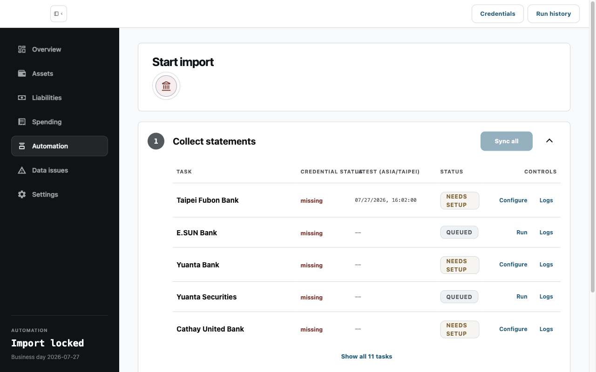
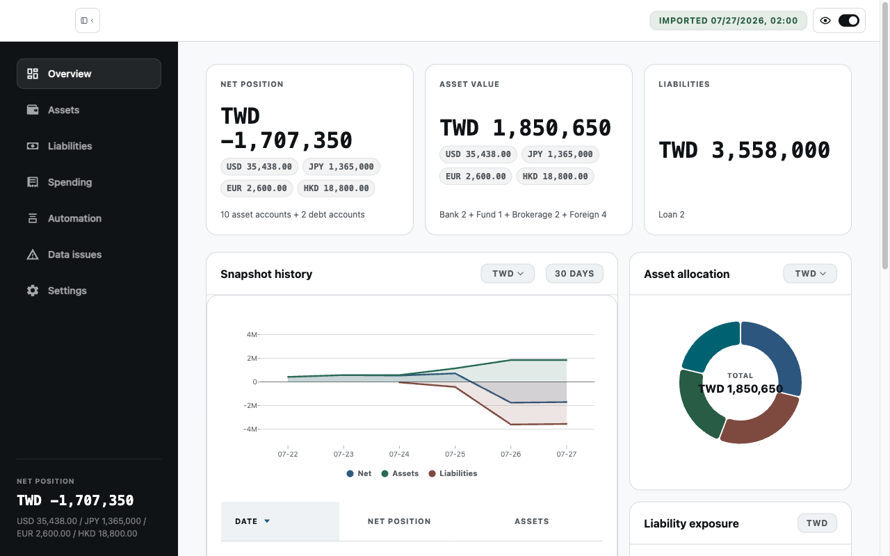

台北富邦
存款、信用卡、貸款
給同時管理三個以上帳戶的你
OctopusBeak 自動收集分散的帳務資料，整理成可追溯、隨時能核對的財務全貌。
適用 Apple silicon｜目前為測試版本
目前支援來源
從銀行存款、信用卡到投資紀錄，OctopusBeak 正逐步把常用的金融來源整理到同一個可核對的地方。
Beta 目前支援存款、信用卡、貸款
信用卡
存款、外幣、貸款、信用卡、基金
證券投資
台幣存款、外幣存款
存款
存款
存款
帳戶
帳戶
虛擬資產
電子發票
完整流程示範
選好金融來源後，OctopusBeak 會收集並整理帳務資料；只有遇到驗證碼、OTP 或需要判斷的情況，才會請你接手。


從全貌回到細節
從整體資產與負債，到帳戶與交易明細，每一層都能找到對應來源；需要確認時，不必回頭翻遍檔案與試算表。
便利不必拿隱私交換
帳務資料與設定保存在本機，憑證透過 macOS 安全儲存機制加密；需要你判斷的地方，程式會停下來等你。
FAQ
OctopusBeak 在你的 Mac 上執行。收集的帳務資料、財務帳本與應用程式設定會保存在本機；登入憑證則透過 macOS 的安全儲存機制加密。遇到驗證碼、OTP 或需要判斷的情況時，程式會暫停並交由你處理。
目前 Beta 支援搭載 Apple silicon（M 系列晶片）的 macOS。Intel Mac、Windows 與其他平台尚未提供。
從容掌握